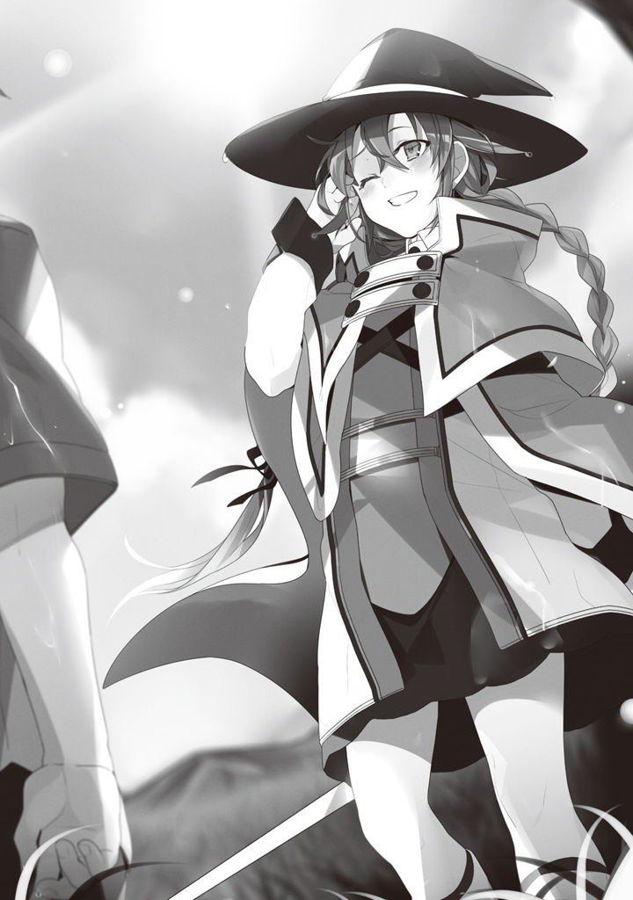

Volume 1 · Unofficial AI-assisted fan translation
Episode 6: The Reason for Respect
Since coming to this world, I've never once set foot outside the house.
On purpose, I've made sure not to go out.
Because I'm scared.
If I go out into the yard, and look beyond it, the memories come right back.
Memories of that day. The pain in my side. The cold of the rain. Bitterness. Despair. The pain of getting slammed by the truck.
It all comes back as if it were yesterday.
My legs shake.
Looking outside from a window, I could manage. On my own two feet, I could make it as far as the yard.
But, I can't go any farther than that.
I know.
The idyllic countryside spreading out before my eyes turns into hell in an instant. Scenery that looks oh so peaceful will never, ever accept me.
When I was alive. Stewing away inside the house, how many times did I fantasize, I wonder.
If Japan suddenly got dragged into a war. If one day, out of the blue, a beautiful girl moved in to freeload at our place.
Then, for sure, I'd get my act together.
I'd fantasize like that and run away from reality.
I dreamed it again and again.
The me in those dreams was no superhuman, but I was ordinary. Like any ordinary person, I did what I could. I was managing to live on my own.
But, the dream ended.
If I set even one foot outside the house, this dream might end too.
The dream might end, and drop me back into that moment of despair.
That moment when I was about to be crushed under a wave of regret...
No, this isn't a dream.
Like hell a dream could be this real.
If someone told me it was a VRMMORPG, I'd buy that sooner.
This is reality.
That's what I tell myself.
I get it.
This reality is not a dream.
I get it, and still I can't take a single step out.
No matter how fired up I get inside.
Even if I swear out loud that I'll get serious.
My body never, ever follows.
I could cry.
The graduation test would be held outside the village.
Roxy said so, and I put up a feeble resistance.
"Outside?"
"Yes, outside the village. I've already arranged a horse, too."
"Couldn't we do it inside the house?"
"We cannot."
"We cannot, huh..."
I was torn.
In my head, I know. Someday I'll have to go outside.
That there's no way in hell I'm staying a shut-in in this world too.
But, my body refuses. It remembers. That time.
The time, when I was alive, that a bunch of punks beat me to a pulp, cackled at me, and left my heart with a gaping wound.
The time I had nowhere left to turn and ended up shutting myself in.
"What's the matter?"
"N-no... um... it's just, there might be monsters and stuff out there, and all."
"Around here, you'll hardly ever run into any unless you go near the forest. Besides, even if we do, they're weak, so I can beat them on my own. For that matter, I think even you could handle them, Rudy."
Seeing me, at this late stage, cooking up one excuse after another not to go outside, Roxy wore a dubious look.
"Oh, that reminds me, I heard about this. Rudy, you've never been outside, have you?"
"Uh... no."
"Aha. You're scared, aren't you? Of the horse."
"H-horses don't scare me or anything, you know?"
If anything, I like horses, okay?
I used to play Derby Stal○ion and all.
"Heh heh. That's a relief. So there's a part of you that acts your age after all."
Roxy had it wrong.
But, I couldn't tell her that going outside was what scared me.
Because that, surely, is more pathetic than being scared of a horse.
I had my pride.
A flimsy, cheap pride with zero substance behind it.
Not wanting this little girl to look down on me: that, and nothing more.
"There's no helping it. Heave-ho."
When I stayed rooted to the spot, Roxy suddenly hoisted me onto her shoulder.
"Wha!?"
"Once you're up there, you'll stop being scared in no time."
I didn't struggle.
Partly it was the tug-of-war going on inside me, but I also had this feeling: maybe I could just let myself be carried off and go with the flow.
Roxy plopped me up onto the horse, practically tossing me there.
Roxy hopped straight up behind me and gave the reins a single light snap.
The horse set off at a walk, clip-clop, clip-clop.
And just like that, I left the house.
It was my first time past the yard since coming to this world.
Roxy rode slowly on through the village.
Every now and then, villagers looked our way, shooting us blunt, rude stares.
Don't tell me, I thought.
My body tensed up.
Stares still scare me, even now.
The rude ones, the ones that look down at you like you're beneath them, most of all.
What if one of them comes up and talks to me in that tone, the one that's so obviously making fun of me?
That shouldn't happen.
They shouldn't know.
In this world, the only people who know me are inside that cramped house.
What are they looking at.
Quit staring. Get back to work...
No...
Not at me.
They're looking at Roxy.
Some of them even gave Roxy a small bow.
Ah, I see.
She's built herself a standing in this village.
Even though, in this country, demons still catch a lot of flak.
And out in the sticks, that has to be even more pronounced.
In just two years, she's become someone this village bows to.
The moment I thought that, Roxy at my back suddenly felt dependable.
She knows the roads, and she knows the people.
Even if people said something to me, she'd probably handle it.
Ah, who'd have thought the girl who peeped into the bedroom and did that stuff would ever feel this dependable.
Little by little, I felt the tension draining out of my body.
"Caravaggio is in a good mood. He seems happy to have you riding him, Rudy."
Caravaggio being the horse's name.
Naturally, I have no idea what kind of mood a horse is in.
"Is that so."
As I leaned back, tossing off some answer, Roxy's modest chest pressed against the back of my neck.
Nice.
What was I even afraid of, I wonder.
In a village this peaceful, who's going to make fun of me?
"Are you still scared?"
Asked that, I shook my head.
People's stares didn't scare me anymore.
"No, I'm fine now."
"See? You were fine, weren't you?"
My mind had some breathing room now.
And then, the scenery around me started to register.
Fields in every direction, as far as the eye could see, with houses dotted here and there in between.
The very picture of a farming village.
I could see a fair number of houses spread over a pretty wide area. If they'd been packed closer together, I might have taken it for a town.
If there'd been windmills, I might have taken it for Switzerland.
Oh, there's a water mill, too.
Once I could relax, the silence started to bother me. Until now, whenever I was with Roxy, there had never been a silence like this.
Nor had the two of us ever been pressed together like this. The silence wasn't painful, but it made me squirm.
So I opened my mouth.
"Sensei, what do they grow in these fields?"
"Mostly Asuran wheat. It's what bread is made from. Then batirus flowers, and a few vegetables, I suppose. The batirus flowers are processed in the royal capital and made into fragrances. Apart from that, it's all things that show up on our table every day."
"Oh, those over there are green peppers, right? The ones you can't eat, Sensei."
"I-it's not as though I can't eat them. I'm just not very fond of them, that's all."
I kept on asking her one thing after another.
Today, Roxy had said, was the final test.
Meaning, the home tutoring was over.
This is impatient Roxy we're talking about. She might be out of our house as soon as tomorrow.
If so, today's the last day. I'd better talk to her more while I can.
But, I couldn't find a single clever topic, so all I did was keep on listening to her talk about the village.
According to Roxy, this village was part of the Fittoa Region, in the northeast of the Kingdom of Asura, and it was called Buena Village.
At present, just over thirty households lived here, making their living by farming.
My father, Paulo, is the knight stationed in this village.
His job is to keep an eye on whether the villagers are doing their work properly, and at the same time, to settle quarrels in the village, defend it when monsters and such attack, and so on.
In short, a state-certified bouncer.
That said, in this village, the young men take turns keeping watch themselves.
So once Paulo finishes his rounds in the morning, he's mostly home in the afternoon.
It's a basically peaceful village, so there's no work for him.
As we talked about all that, the fields gradually started to thin out.
I ran out of things to ask, and for a while we were silent again.
After that, another hour or so, maybe.
The fields had vanished from around us completely, and we were crossing an empty grassland.
Grassland, on and on to the far end of the horizon.
No, far off in the distance, I could faintly make out mountains.
Not a view you'd see in Japan, at least.
The Mongolia I saw in a geography textbook or something, maybe it looked like this.
"This should do."
Roxy stopped the horse beside a lone tree standing all by itself, got down, and tied the reins to the tree.
Then she lifted me down in her arms.
Next, she turned to face me.
"I am now going to use the Water Saint-rank attack magic 'Cumulonimbus'. This spell brings down torrential rain, with lightning, over a wide area."
"Yes."
"Please copy me and try using it."
Use Water Saint-rank magic.
I see, so that's what the final test is.
The spell she's about to use is Roxy's greatest magic, and if I can use it, that means there's nothing left Roxy can teach me.
"Since this is a demonstration, I will dispel it after about a minute, but, let's see... If you can keep the rain falling for over an hour, we'll call that a pass."
"Are we doing it where nobody's around because it's a secret technique?"
"No. It's because people and crops could be harmed."
Oho.
So it brings down rain on a crop-wrecking scale.
This oughta be something.
"Now, then."
Roxy raised both hands toward the sky.
"O mighty spirit of water, prince of the Thunder Emperor risen to the heavens!!
Grant my wish, bring forth a savage blessing, and flaunt your might before puny beings!!
Strike the divine hammer upon the anvil, make your dread known, and bury the earth in water!!
Ah, rain!! Sweep all away, and drive out everything that is!!
'Cumulonimbus'!!"
She chanted slowly, weighing every single word.
Over a minute, all told.
The moment she finished, everything around us went dark in a flash.
A few seconds of time lag—and then rain began hammering down.
A ferocious gale raged, and the pitch-black clouds began to flash with lightning.
In rain roaring down like a waterfall, purple light raced through the clouds, rumbling.
The lightning inside the clouds grew stronger and stronger.
It swelled bigger and bigger, as if the light had weight to it—
—and came down.
KA-BLAAAM!!
It hit the tree.
My eardrums rang, and spots flickered in front of my eyes.
I thought I'd black out.
"Ah!!"
Roxy let out the noise she makes when she's pulled a careless blunder.
The clouds scattered in an instant.
The rain and the lightning died down right away, too.
"Uh-oh, uh-oh..."
Roxy, white as a sheet, went running over to the tree.
I took a look, and the horse was lying on the ground, smoking.
Roxy laid her hands on the horse, and at once, an incantation.
"O goddess of motherly compassion, close the wounds of that one, and a sound body shall be restored. 'Ex Healing'!!"
In a flustered scramble, Roxy worked Intermediate healing magic on it, and before long the horse came back to life.
It hadn't died on the spot, apparently.
Intermediate healing magic can't bring back the dead, after all.
The horse had a terrified look on its face, and Roxy's forehead was beaded thick with cold sweat.
"Ph-phew... That was a close one."
It sure was a close one.
That horse is the one and only horse we've got.
Paulo grooms it with care every day, and every so often, all smiles, he heads out on a long ride.
Apparently it's nothing special as horses go, but it's a friend that has shared the good times and the bad with him for years, and he makes no bones about saying he loves it second only to Zenith. That's how precious this horse is.
Of course, Roxy, who has lived with us for two years, knows that perfectly well too.
I know that Roxy once caught Paulo plastered against the horse with a look of pure rapture on his face, and was a bit weirded out.
"P-please keep this hush-hush, all right?"
Roxy said, teary-eyed.
She's a klutz.
She pulls stuff like this all the time, out of sheer carelessness.
But, she's a hard worker. I know she stayed up late every night preparing my lessons.
I also know she was trying her hardest to look dignified, so nobody would look down on her for being so young.
I like that about her.
Enough that, if only we weren't so far apart in age, I'd want her for my bride.
"Don't worry. I won't tell Father."
"Uuu... please don't."
If I could have, I'd have liked to meet her as someone her own age.
"Uuuh..."
Roxy was half in tears, but right away she gave her head a hard shake, slapped her cheeks a couple of times, and looked at me, all business.
"Now, try it. I will keep Caravaggio safe."
The horse looked ready to panic and bolt at any second, but Roxy was holding it firmly in place with her small body.
I couldn't imagine Roxy's small body holding back a horse, but the horse, fidgety as it was, stayed quiet. Still holding it like that, Roxy started mumbling some incantation or other.
And even as I watched, walls of earth closed over her and the horse.
In the blink of an eye, a kamakura made of earth stood finished.
The Advanced earth spell, 'Earth Fortress'.
In that, they should be fine even in a thunderstorm.
Okay, let's do this.
Time to show her something big and knock Roxy's socks off.
Uh, the incantation went, if I remember...
"O mighty spirit of water, prince of the Thunder Emperor risen to the heavens!!
Grant my wish, bring forth a savage blessing, and flaunt your might before puny beings!!
Strike the divine hammer upon the anvil, make your dread known, and bury the earth in water!!
Ah, rain!! Sweep all away, and drive out everything that is!!
'Cumulonimbus'!!"
Got it out in one go.
Clouds billowed up and took shape.
And at the same time, I understood 'Cumulonimbus'.
It creates a cloud in midair, and at the same time moves it around in complicated ways to turn it into a thundercloud. Something like that.
If you don't keep pouring in mana the whole time, the cloud stops moving, and it breaks up right away.
(Mana aside, keeping both hands up in the air for a whole hour is gonna be rough...)
No, wait.
Being a mage is all about ingenuity.
There's no need to hold out for a whole hour in this energy-gathering pose, is there?
Right. This is a test.
Instead of staying in the same position for a whole hour, once I've made the cloud, I keep that thing going with combined magic.
That was a close one. I have to use what I've been taught.
"Uhh, let's see. I saw this on TV once, way back. The process of how a cloud forms is—"
The cloud Roxy had made earlier was still hanging around.
Something like spawning a tornado on its side, like this, and for the updraft you're supposed to warm the bottom part, right?
And while I'm at it, chill the top too, to speed up the updraft—
Fiddling around like that, I burned through about half my mana.
Eh, but with this much done, it ought to hold for over an hour.
Satisfied, I went through the thundering downpour and into the dome Roxy had made.
Roxy was sitting near the edge of the dark dome, holding the horse's reins.
When she saw me, she gave a little nod.
"This dome will disappear in about an hour, so if the storm hasn't vanished by then, you're fine."
"Yes."
"Don't worry. Caravaggio is fine."
"Yes."
"Don't just keep saying 'yes, yes.' You are to spend the hour outside, keeping that thundercloud properly under control."
Hm?
"Control it?"
"Hm? Did I say something strange?"
"No, um, does it actually need controlling?"
"Why, of course. Even Water Saint-rank magic is still magic, so if you don't properly use mana to maintain it, the wind will scatter it."
"I did set it up so it wouldn't get scattered, though...?"
"Huh? Ah...!?"
As if she'd realized something, Roxy went flying out of the dome.
At the same moment, the dome started crumbling to pieces.
Now, now, keep it under control, would you?
The horse is going to get buried alive.
"Whoa, whoa, whoa."
In a hurry, I took over control and went outside.
Roxy was staring up at the sky, dumbfounded.
"...I see, a tornado rising at a slant pushes the cloud upward...!!"
There stood the thunderhead I had created, growing bigger and bigger without limit.
Nice work, if I say so myself.
Way back, some TV special had done a scientific breakdown of how a supercell forms.
I don't remember the details very well.
I built it with a picture in my head of "it went something like this," and out came something like one.
"Rudy. You pass."
"Eh? But it hasn't been an hour yet, has it?"
"No need. If you can do that much, that's plenty. For that matter, can you make it go away?"
"Ah, yes. It'll take a little while, though."
I cooled the ground over a wide area, warmed the air up top, made currents flowing downward, and so on, and in the end, with brute-force wind magic, I somehow managed to scatter the cloud.
By the time I finished, Roxy and I were soaked to the skin.
"Congratulations. With this, you are Water Saint rank."
Dripping wet and all the lovelier for it, the beauty pushed back her wet bangs and made that declaration with a radiant smile she didn't often show.

I, who couldn't do a single thing when I was alive, had seen one thing through.
The moment I thought that, I had a strange sensation, as if something were welling up from the pit of my stomach.
I know this feeling.
A sense of accomplishment.
In that instant, it truly sank in: for the first time since coming to this world, I had taken my 'first step'.
The next day.
Roxy, her traveling gear in order, stood at the front door dressed not one bit differently from when she arrived two years ago.
My father and my mother hadn't changed much since Roxy came, either.
Only I had grown taller.
"Roxy-chan, you're welcome to stay with us longer, you know? There are still lots of dishes I haven't taught you..."
"That's right. Your tutoring may be over, but you helped us out during last year's drought, too. The guys in the village would be glad to have you, as well."
So my parents said, trying to get Roxy to stay.
Apparently, somewhere I didn't see, Roxy had gotten close with my parents.
Eh, she did have the whole stretch from afternoon to night free, and if she was doing something or other every day, I guess she'd get to know plenty of people.
She's not like a game heroine whose stats never budge unless the protagonist takes some action.
"No. It is a kind offer, but this has made me painfully aware of how powerless I am. For a while, I intend to travel the world and hone my skill at magic."
Seems it was a shock to her, having me catch up with her in rank.
She did say before that she hated the idea of a pupil catching up with her.
"I see. Uh, how do I put it. Sorry about that. Looks like our son went and shook your confidence."
Paulo, my man. That's no way to put it.
"No, I am the one who should be grateful, for having my conceit corrected."
"You can use Water Saint-rank magic. That's hardly getting conceited."
"I learned that even without being able to use something like that, with enough ingenuity, you can use magic that surpasses it."
Roxy said it with a wry smile, and put her hand on my head.
"Rudy. I meant to give it my very best, but I was not up to the task of teaching you."
"That's not true. You taught me all kinds of things, Sensei."
"It helps to hear you say that... Oh, that's right."
Roxy slipped a hand inside her robe, rummaged around in there, and pulled out a pendant on a leather cord.
It was made of a metal with a green sheen, shaped like three spears joined together.
"A graduation present. I didn't have time to prepare anything, so please make do with this."
"What's this...?"
"A Migurd amulet. If you run into a difficult demon, show them this and mention my name, and they may go a little easier on you... maybe."
"I will treasure it."
"That's a 'maybe,' mind you. You must not put too much faith in it."
At the very last, Roxy gave a small smile, and set off on her journey.
At some point, I had started crying.
She really gave me so many things.
Knowledge, experience, skills...
If I'd never met her, I'd probably still be at it alone, Magic Textbook in one hand, doing things the inefficient way.
And more than anything, she took me outside.
I went outside.
That's all it was.
Just that, that's all it was.
Roxy was the one who took me out.
That's what means something.
The one who'd been in this village only two years: Roxy.
The one who never struck me as looking the least bit good with people: Roxy.
The one who, being a demon, can never have gotten a kind look from the villagers: Roxy.
Not Paulo, not Zenith, but Roxy. That it was Roxy who took me out: that means something.
Took me out, sure, but all we did was cross the village.
But, going outside was, without a doubt, a trauma for me.
She healed it.
Just by crossing the village.
She cleared the skies in my heart.
Setting me straight was never her goal.
But, there's no doubt that something inside me broke loose.
Yesterday, when I came home soaking wet, I turned back toward the gate and tried taking just one step outside.
And all there was, was ground.
Plain old ground.
No shaking.
I can walk outside now.
She pulled off something nobody else could.
Something that, when I was alive, neither my parents nor my brothers and sisters could.
She did it for me.
Not with irresponsible words: she gave me courage, the responsible kind.
She didn't do it on purpose.
I know that.
She did it for her own sake.
I know that, too.
But, I'll respect her.
That little girl, I'll respect her.
Swearing that in my heart, I watched Roxy go until her back was out of sight.
In my hands, the staff and the pendant Roxy gave me.
And a wealth of knowledge: that was all I had left.
Or so I thought.
In my room, there were Roxy's stained panties, which I had stolen several months prior.
I'm sorry.